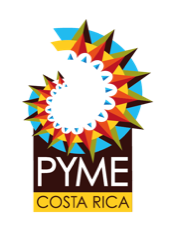

Cotización
- Emitida
- Vence
Datos del cliente
Datos de la empresa
| Servicio | Estimado |
|---|---|
Cómo se calculó
Estimado mínimo
Estimado máximo
IVA
Rango estimado
Estimado automático. El precio oficial lo da el encargado antes de empezar el trabajo, sin costo y sin compromiso.
Estimación con tarifas en revisión. Los montos de este documento salieron
de una tabla de tarifas que la empresa todavía está afinando. Sirven para darse
una idea; no son un precio en firme.
Condiciones
- Este documento es un estimado automático, calculado con los datos que usted nos dio. El precio oficial lo confirma el encargado antes de empezar el trabajo — no es un trámite de aprobación temporal: así funciona siempre, porque en sitio pueden aparecer cosas que un formulario no ve.
- Emergencias atendidas el mismo día, sujetas a disponibilidad del equipo.
Formas de pago
SINPE Móvil
8341-7547
Ticos Sanitarios S.A.
BAC · Cuenta en colones
- Cuenta
- 955029236
- IBAN
- CR76010200009550292361
BAC · Cuenta en dólares
- Cuenta
- 955029228
- IBAN
- CR37010200009550292287
A nombre de Ticos Sanitarios S.A. · También se recibe efectivo.